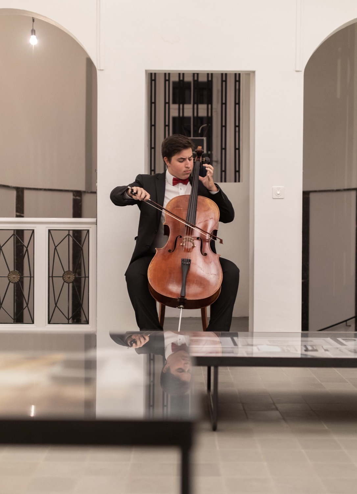

4OCT
2026
2026
Harry Potter
Ensemble Sinfonietta Bern
Lausanne
Salle Paderewski
5:00 PM & 7:00 PM
Harry Potter
Ensemble Sinfonietta Bern
Salle Paderewski
5:00 PM & 7:00 PMHarry Potter
Ensemble Sinfonietta Bern
Yehudi Menuhin Forum
5:00 PM & 7:00 PM«Nouveaux Talents» – Mendelssohn Piano Trio in D minor, Op. 49
with Edna Unseld (violin) & Romy Unseld (piano)
Live on RTS Espace 2
Salle de musique
5:00 PMTim Burton Universe
Ensemble Sinfonietta Bern
Kirche Bühl Wiedikon
7:00 PMAdvent Concert: Works by Rossini, Mendelssohn & Beethoven
Concento Stravagante Orchestra
Katholische Kirche
8:00 PMAdvent Concert: Works by Rossini, Mendelssohn & Beethoven
Concento Stravagante Orchestra
Schlosskirche
5:15 PMAdvent Concert: Works by Rossini, Mendelssohn & Beethoven
Concento Stravagante Orchestra
Kloster Einsiedeln, Grosser Saal
5:15 PMBritten: Ceremony of Carols
Ensemble Sinfonietta Bern
Salle Paderewski
7:00 PMABBA Hits
Ensemble Sinfonietta Bern
Salle Paderewski
9:00 PMSilvesterkonzert: Schumann Cello Concerto in A minor, Op. 129 & Schubert Mass in A-flat major, D 678
Camerata Castello / Coro Piccolo Castello
Stadtkirche St. Johann
4:00 PM«Violino Magico» – Vivaldi & Piazzolla, The Four Seasons
with Svetlana Makarova, So-Ock Kim, Dimitry Smirnov, Yury Revich
Grosser Saal MKZ Florhof – Festival Herbst in der Helferei
7:30 PM«Unendliche Endlichkeit» – Shaw, Gombert, Byrd, Williams, O’Regan
with Marco Amherd, Vokalensemble Zürich West & Stringendo
Kirche St. Peter – Festival Herbst in der Helferei
7:30 PM«Vergnügte Seelenlust»
Baroque Music with Meret Lüthi
Helferei – Festival Herbst in der Helferei
7:30 PMLord of the Rings (with soprano)
Ensemble Sinfonietta Bern
Kirche St. Jakob
7:00 PMMoon River – Henry Mancini (arr. Hrvoje Krizic)
Cello Solo Jazz Improvisation after Mark Summer
Every Breath You Take – Sting (arr. 2Cellos)
Duo with Sophie Ochsner
Aula Kantonsschule Frauenfeld
6:00 PM (tentative)Max Richter
Ensemble Sinfonietta Bern
Yehudi Menuhin Forum
7:00 PMLord of the Rings (with soprano)
Ensemble Sinfonietta Bern
Casino Barrière
7:00 PMHaydn: Kaiserquartett
Camerata Concert
Quartett Inferno (Isabelle Hengartner – violin, Yuma Stäubli – violin, Caroline Hengartner – viola)
Florhof, Grosser Saal
7:00 PMMozart: Eine kleine Nachtmusik
Ensemble Sinfonietta Bern
Helferei Kapelle
5:00 PM & 7:00 PMHayao Miyazaki's Dreams
Ensemble Sinfonietta Bern
St. Peter
7:15 PMOrchestral works
Stringendo Zurich
Kloster Fahr (Pfingstfestival)
5:00 PMHaydn: Kaiserquartett & Orchestral works
Stringendo Zurich
Quartett Inferno (Isabelle Hengartner – violin, Yuma Stäubli – violin, Caroline Hengartner – viola)
Kloster Fahr (Pfingstfestival)
7:00 PMMendelssohn: Piano Trio in D Minor, 1st Movement
Master Recital of Pierina Däppen
HKB (Bern Academy of the Arts)
6:00 PMMozart: Eine kleine Nachtmusik
Ensemble Sinfonietta Bern
Cercle de Sacré Coeur
7:00 PMGhibli: Spirited Away
Ensemble Sinfonietta Bern
Cercle de Sacré Coeur
5:00 PMPremiere of a short film about Hermann Hesse
Kinepolis
7:00 PMMax Richter: Vivaldi — The Four Seasons Recomposed
Ensemble Sinfonietta Bern
Predigerkirche
5:00 PM & 7:00 PMEaster Sunday Service Concert
With Hans-Jörg Ganz, organ
Reformierte Kirche
10:00 AMMax Richter: Vivaldi — The Four Seasons Recomposed
Ensemble Sinfonietta Bern
Salle Paderewski
7:00 PMThe Dreams of Hayao Miyazaki
Ensemble Sinfonietta Bern
Salle Paderewski
7:00 PMThe Music of The Lord of the Rings — Tribute to Howard Shore
Ensemble Sinfonietta Bern
Salle Paderewski
5:00 PM
Hrvoje Krizic, born in Switzerland in 2001, has been playing the cello since the age of six. He received his first lessons from Peter Marti at the Schaffhausen Music School. He completed the Pre-College program at the Winterthur/Zurich Conservatory under Emanuel Rutsche, and also studied piano with Jun Onaka.
With the cello, he has won numerous regional and national prizes. He received musical inspiration from Valery Sokolov, Mischa Maisky, Danjulo Ishizaka, Wen-Sinn-Yang, Louise Pellerin, and Ralph Gothoni. At just 14 years old, he performed Saint-Saens' First Cello Concerto with orchestra at a benefit concert for the Red Cross.
Further solo performances followed in Switzerland, Croatia, Germany, and the Netherlands. In 2018, he participated in the Piz Amalia Music Festival in The Hague. In addition to the Saint-Saens Cello Concerto, he debuted in 2019 with both the Haydn Cello Concerto and the Lalo Cello Concerto. In 2021, he won first prize at a national competition with Trio Giocoso. Today, he performs regularly with various ensembles across Switzerland, including Stringendo Zurich and Sinfonietta Bern.


{kind=link}